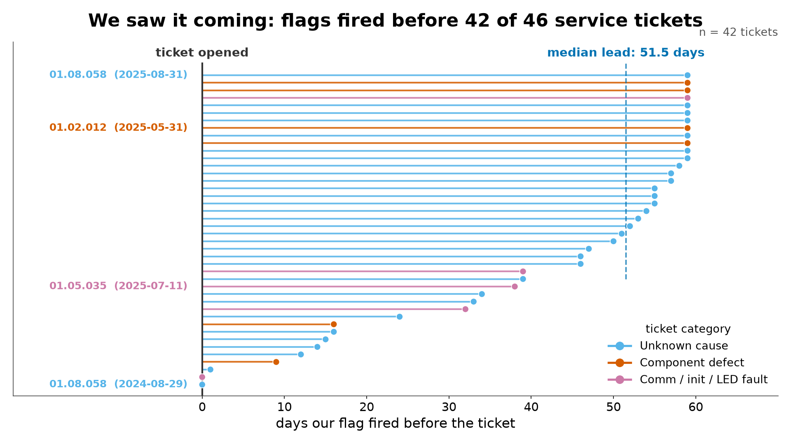
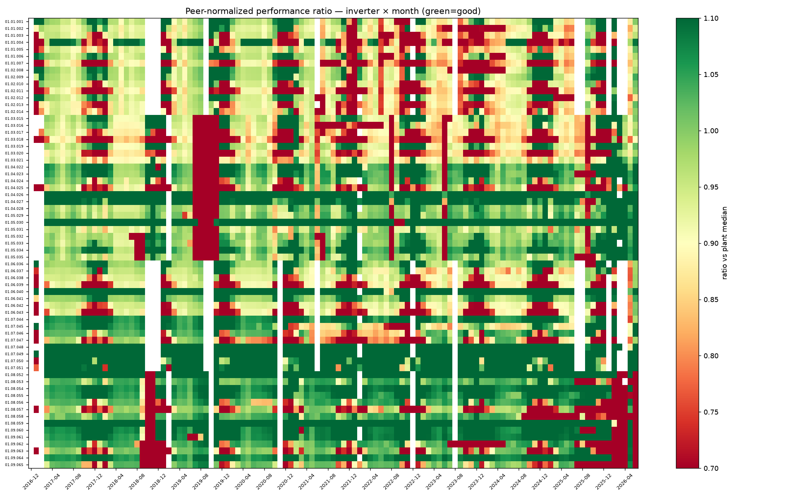
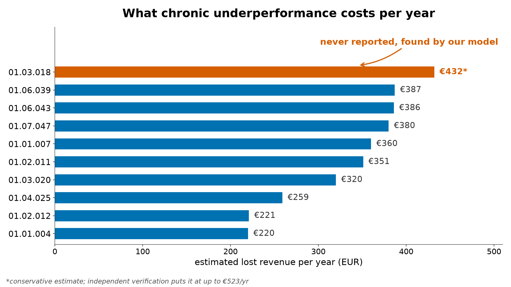
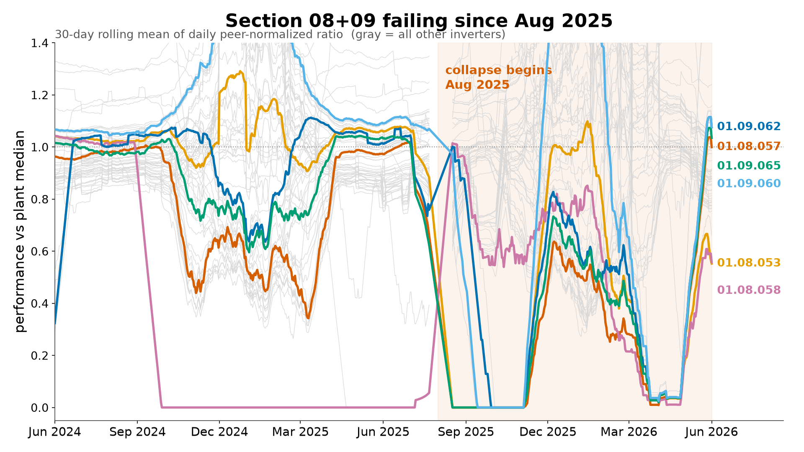
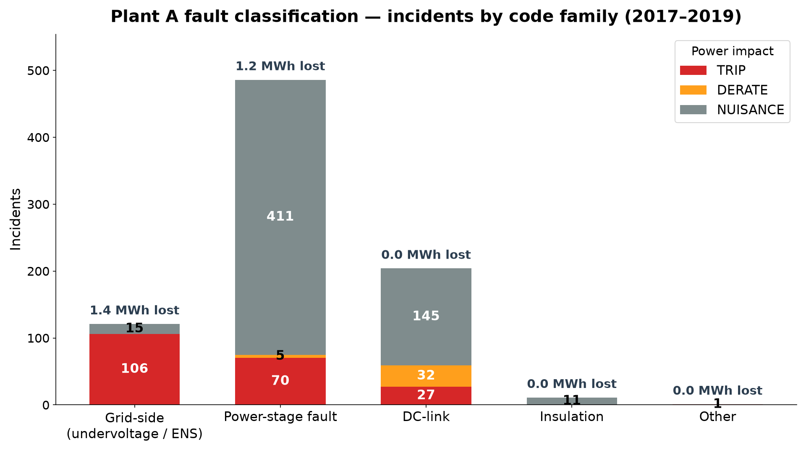
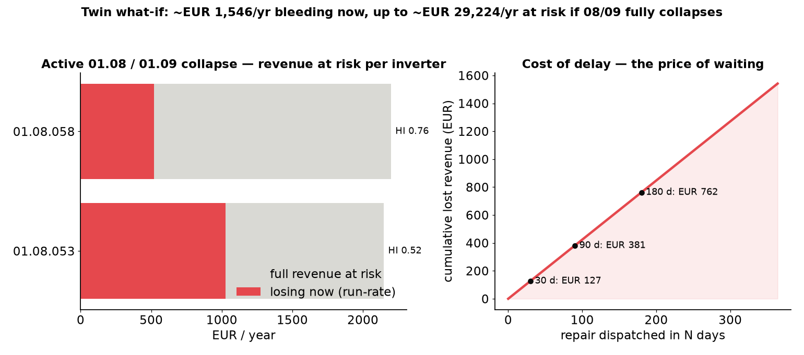

| Direction | What we delivered | |
|---|---|---|
| Anomaly detection | done | Active 08/09 collapse + unreported INV 01.03.018, found from data alone |
| Soiling detection | done | 37/107 inverters with sawtooths; winter shading quantified (Plant B) |
| Fault classification | done | 823 incidents → 25% trip / 4% derate / 71% nuisance; ENS costliest |
| Performance-ratio modelling | done | Per-inverter peer ratio + absolute twin (R² 0.957) |
| Ticket intelligence | done | 42/46 flagged in advance, median 51.5-day lead |
runs/ and independently clean-room verified.